Firefox OS
Web Native
self.conference / Detroit / May 30, 2014
Who am I?
{computer,web,mad} scientist
{tech,scifi} writer
home{brew,roast}er
 Mozillian
Mozillian
Agenda
Apps & the Open Web
Mozilla & Firefox OS
Web APIs & Web Activities
Seriously, what about native?
Developer Tools
Hacking Firefox OS
What is Mozilla?
“Our mission is to promote openness, innovation & opportunity on the Web.”

What is Mozilla?
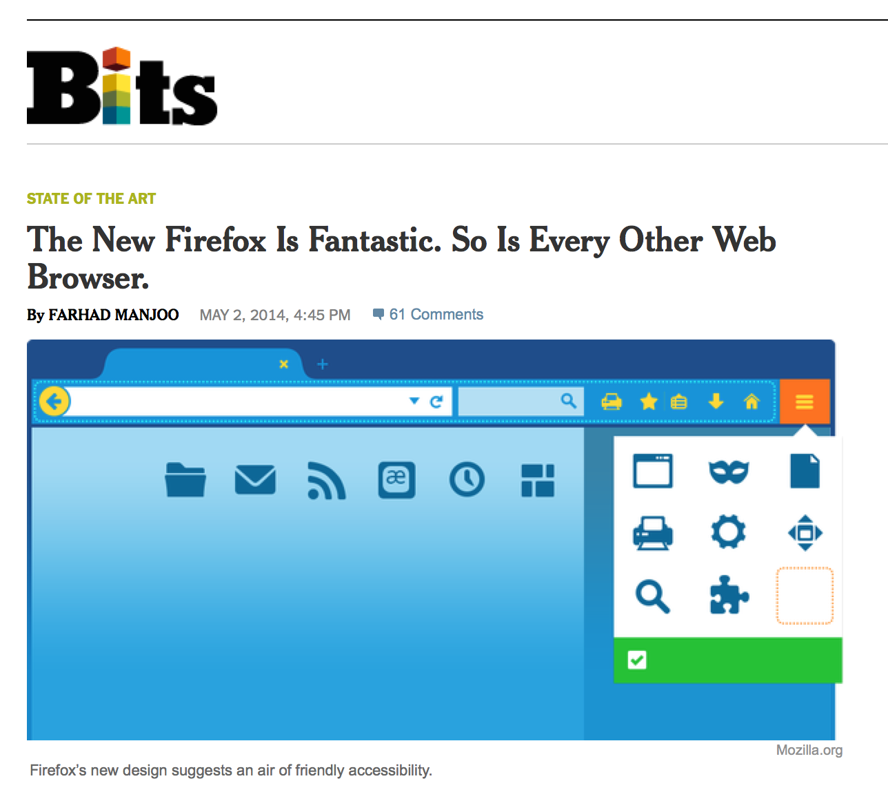What is Mozilla?
“The success of our mission depends on participation from people like you.”

What is Mozilla?
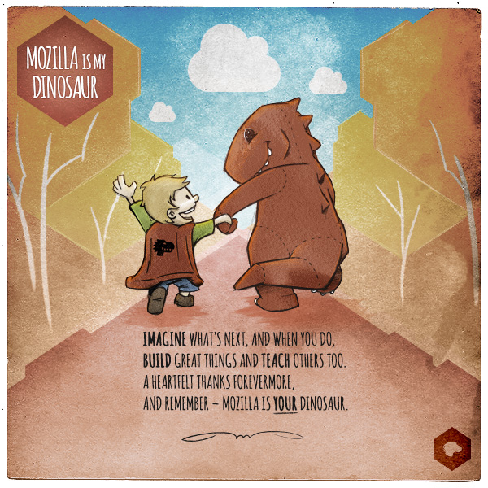What is Firefox OS?
“Firefox OS is a new mobile operating system, developed by Mozilla, and based on Linux and the Gecko engine that powers Firefox.”
What is Firefox OS?
“Mozilla’s strategy has been to build Firefox OS primarily for emerging markets, where there are still billions of people who have yet to experience their first smartphone.”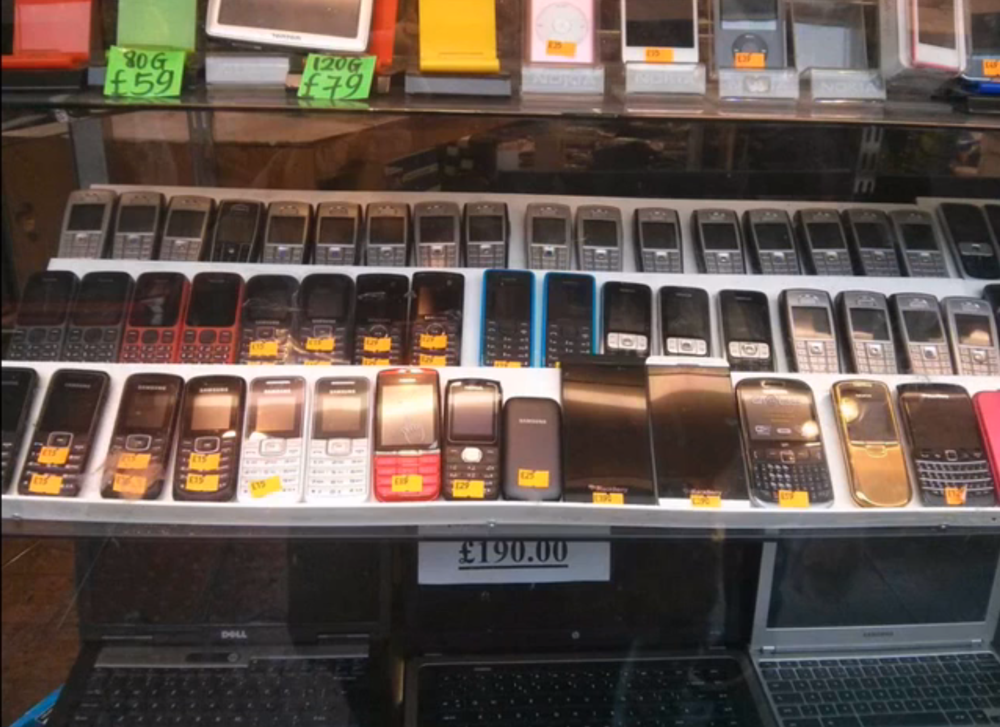
What is Firefox OS?
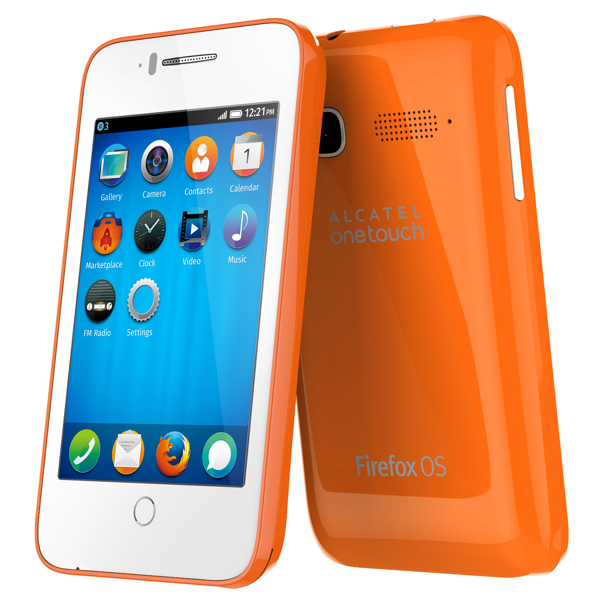
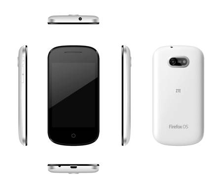
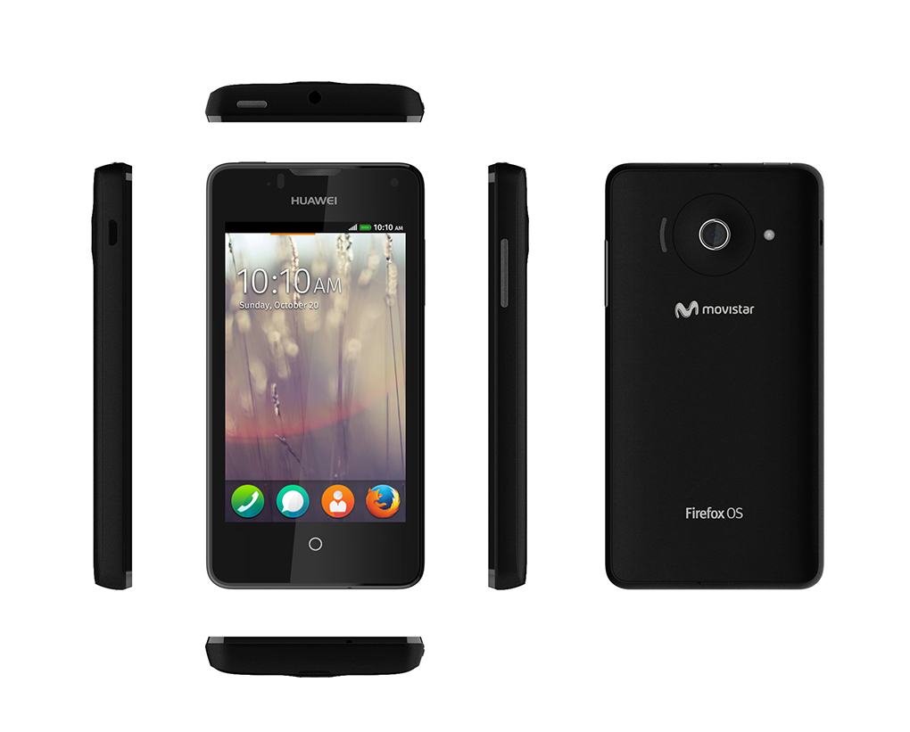
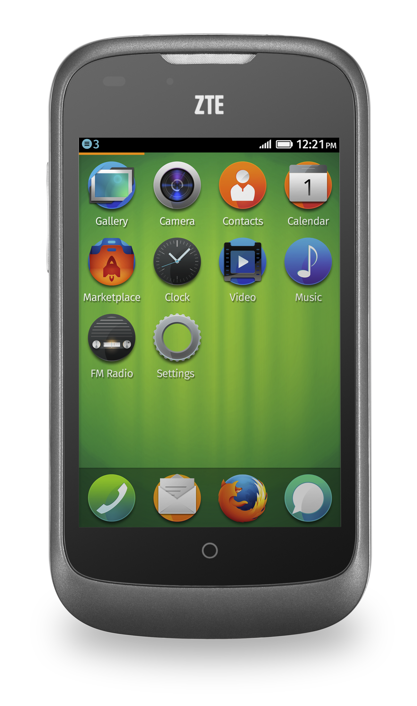
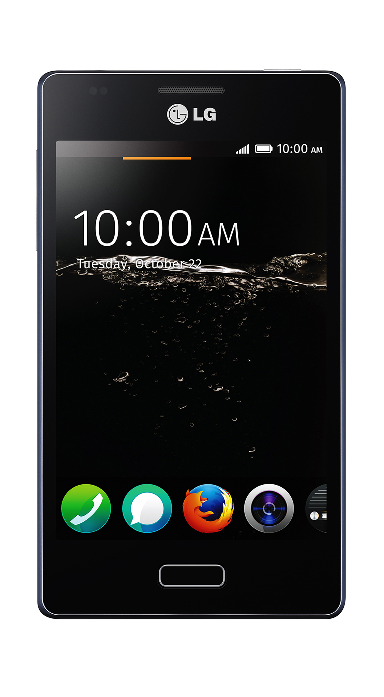

~7 mobile operator partners, ~3 hardware partners
What is Firefox OS?
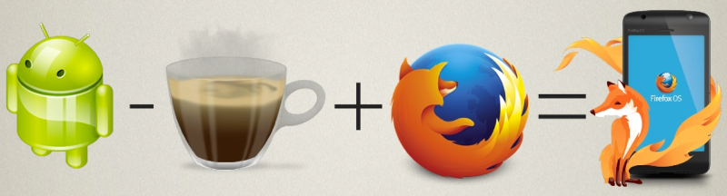Gonk
Linux & Hardware Abstraction
Gecko
Firefox Core Engine
Gaia
Homescreen & Core Apps
What are Apps?
Appetizers!
What are Apps?
Appetizers!
No!
What are Apps?
Applications
“...an "app" is really much more than just a shortened slang term. It's not just the term that's shortened, and it's not just the term that's slanged. It's also the application itself that's shortened and slanged...”
— Ian Bogost (21 Jan 2011)
What are Apps?
Single task
Limited attention
Focused UX
Touch UI
Cost $1 to $5
($50 is really pushing it)
What's the Open Web?
What isn't the Open Web?
.png)
What isn't the Open Web?


What is the Open Web?


Apps on the Web
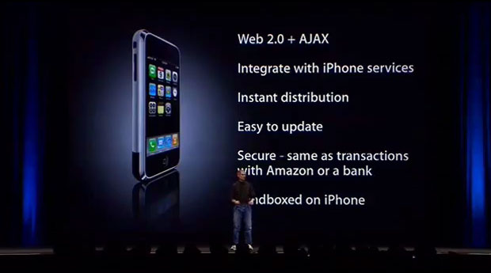The Web Wasn't Ready
“Telling developers that web apps are iPhone apps just doesn’t fly. Think about it this way: If web apps —
which are only accessible over a network;
which don’t get app icons in the iPhone home screen;
which don’t have any local data storage
— are such a great way to write software for iPhone, then why isn’t Apple using this technique for any of their own iPhone apps?”
— John Gruber (11 Jun 2007)
HTML5 APIs
| localStorage |
|
Offline |
| IndexedDB | AppCache | |
| History | Video | |
| Geolocation | Audio | |
| Touch Events | Canvas | |
| Drag and Drop | WebGL | |
| Web Workers | Media Capture | |
| Web Sockets | WebRTC |
"Add to home screen"
The Open Web App Manifest
https://my-app.example.com/manifest.webapp
Content-Type: application/x-web-app-manifest+json
{
"name": "My App",
"description": "My elevator pitch goes here",
"launch_path": "/index.html",
"icons": {
"128": "/img/icon-128.png"
},
"developer": {
"name": "Your name or organization",
"url": "http://your-homepage-here.org"
},
"default_locale": "en"
}
Installing an Open Web App
var manifestUrl = 'https://my-app.example.com/manifest.webapp';
var request = window.navigator.mozApps.install(manifestUrl);
request.onsuccess = function () {
// Save the App object that is returned
var appRecord = this.result;
alert('Installation successful!');
};
request.onerror = function () {
// Display the error information from the DOMError object
alert('Install failed, error: ' + this.error.name);
};
Build Your Own Marketplace
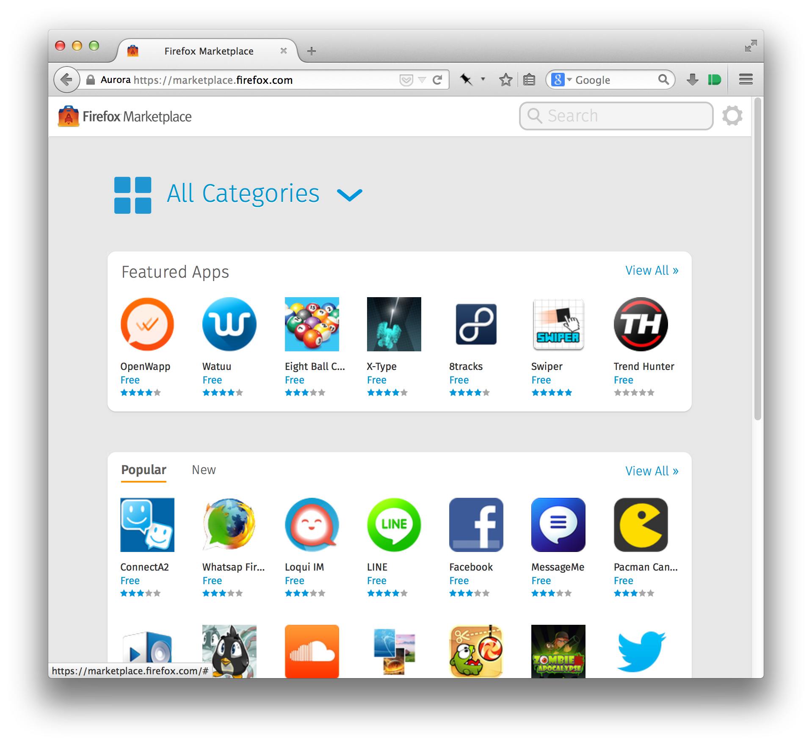Build Your Own Marketplace
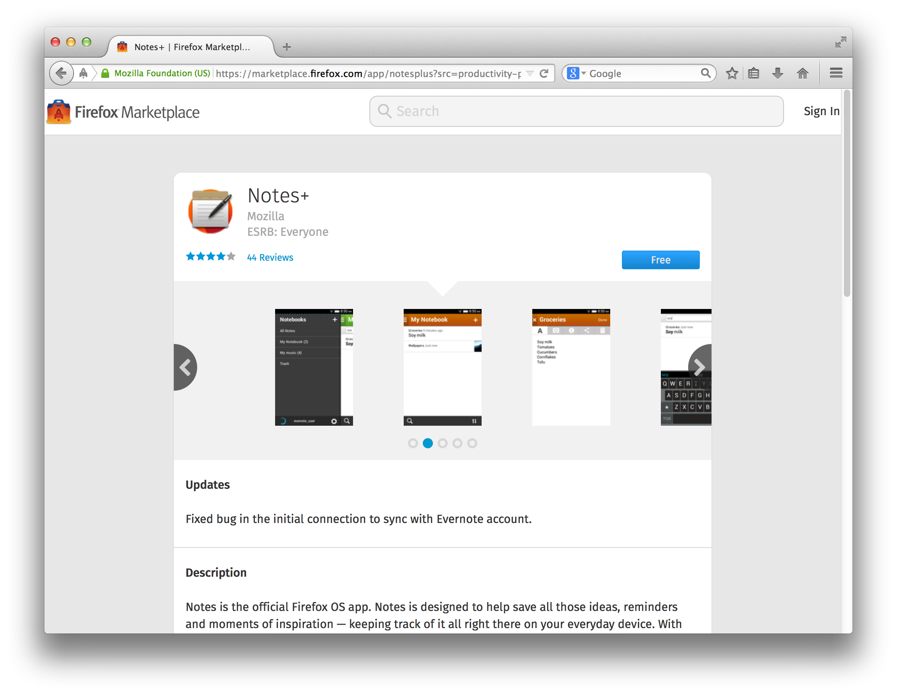Build Your Own Marketplace
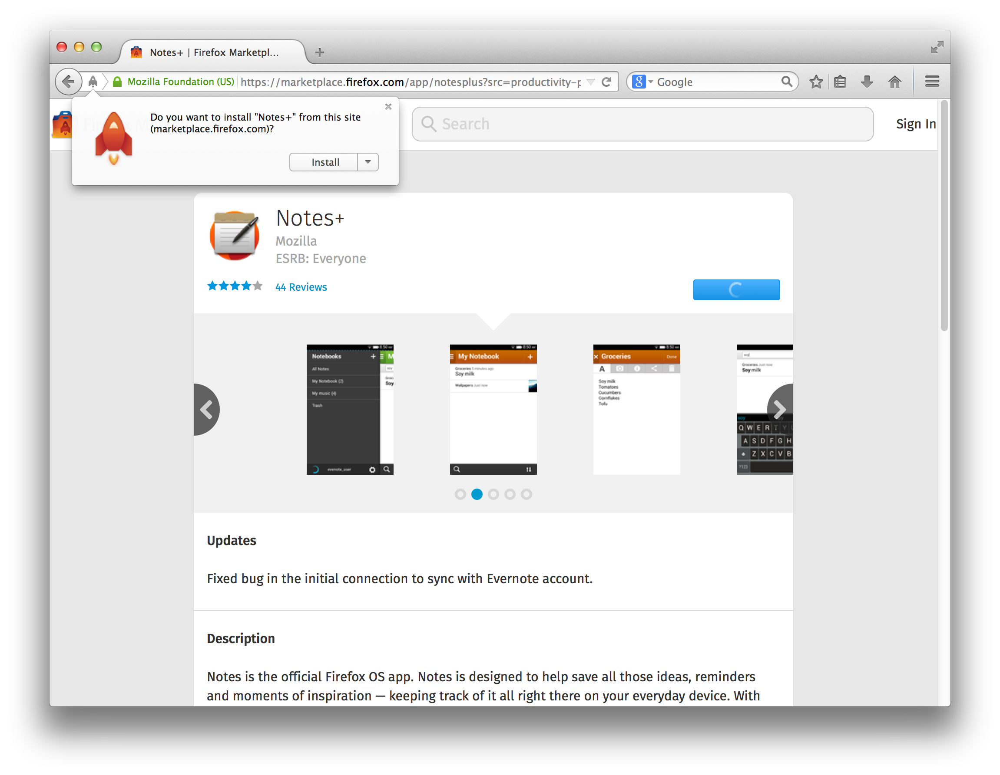Build Your Own Marketplace
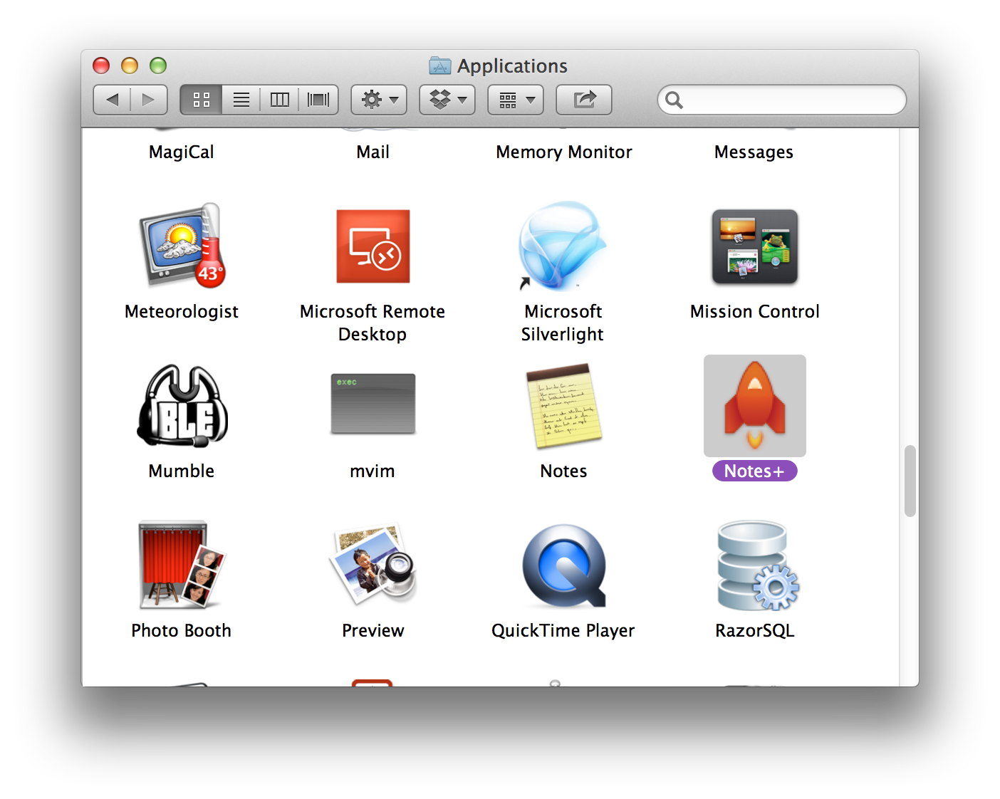Run Everywhere a Bunch of Places
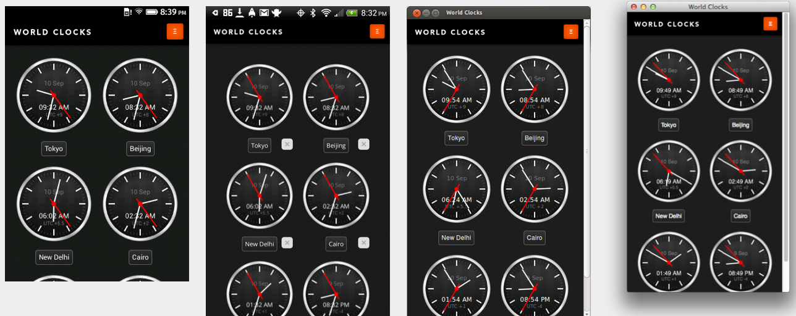
Web APIs

Web APIs
| Vibration | Network Information | Battery Status |
| Alarm | Notifications | Payment |
| Screen Orientation | Device Orientation | Ambient Light |
| Proximity Sensor | Pointer Lock | FM Radio |
| Telephony | SMS | Push |
Web APIs
Vibration API
window.navigator.vibrate(200);
window.navigator.vibrate([200, 100, 200]);
Web APIs
Battery Status API
var battery = navigator.battery ||
navigator.mozBattery || navigator.webkitBattery;
function updateBatteryStatus() {
console.log("Battery status: " + battery.level * 100 + " %");
if (battery.charging) {
console.log("Battery is charging");
}
}
battery.addEventListener("chargingchange", updateBatteryStatus);
battery.addEventListener("levelchange", updateBatteryStatus);
updateBatteryStatus();
Web APIs
Screen Orientation API
/* For portrait, we want the tool bar on top */
@media screen and (orientation: portrait) {
#toolbar { width: 100%; }
}
/* For landscape, we want the tool bar stick on the left */
@media screen and (orientation: landscape) {
#toolbar { position: fixed; width: 2.65em; height: 100%; }
}
screen.addEventListener("orientationchange", function () {
console.log("The orientation of the screen is: " +
screen.orientation);
});
screen.lockOrientation('landscape');
Web APIs
Device Orientation API
function handleOrientation(event) {
var absolute = event.absolute;
var z_rot = event.alpha;
var x_rot = event.beta;
var y_rot = event.gamma;
// Do stuff with the new orientation data
}
window.addEventListener("deviceorientation", handleOrientation,
true);
Web Activities
...
What about native?
...
Developer tools
...
Hacking Firefox OS
...